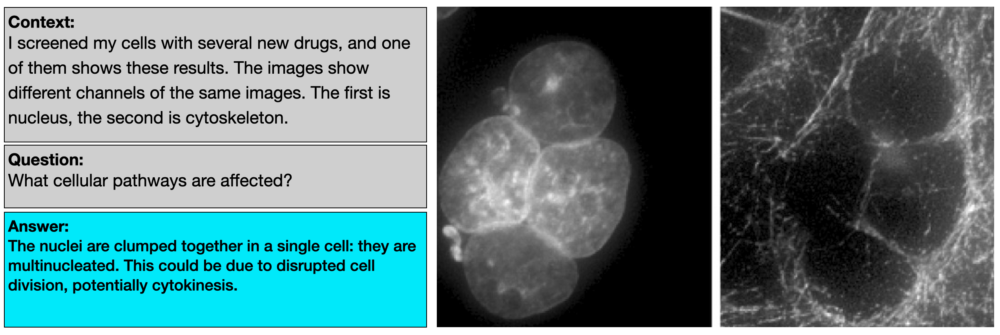
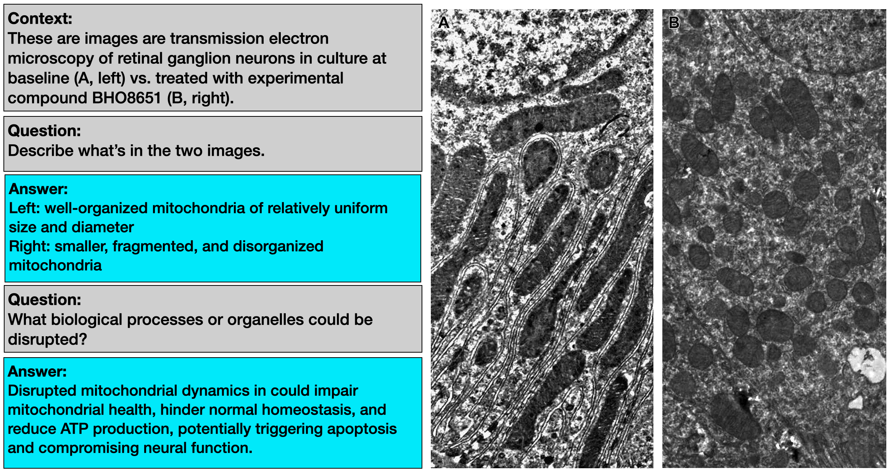

Check out the main page here.

Check out the main page here.
We're collecting between 1000 and 5000 questions for v1 of our benchmark, which we intend to publish this as a benchmark & evaluation paper. We will most likely submit this to a machine learning conference at the end of September and put a preprint online soon after (note that in machine learning, it’s most common to publish in conferences instead of journals; conference papers are indexed). Significant contributors will be added as authors to the paper (see next section). We are NOT creating AI systems to solve this benchmark in this paper. That is for future work.
We’re looking for benchmark contributions from experts in interpreting microscopy images for biology. Since we want a very diverse range of questions, we welcome experts from all imaging modalities, model systems, research areas etc. You will submit questions using a google form that we will send to you.
Your contribution will be considered substantial enough for authorship when, after our quality control and review process, your contributed data and questions satisfy some criteria, which we specify below.
How we count contributions
A single “question” is an image (or image set), some text giving the context, some question text, and an answer text, like this:
For a single image (or image set), you can also submit multiple questions like this:
One image / image set is called an “image set example”, and so you can have multiple questions per “image set example”.
Requirement for acknowledgement
If you submit 2 image set examples, and 10 questions (after quality control), you’ll receive acknowledgement in the paper, and project website.
Requirement for authorship
For authorship, you must satisfy ALL of the following criteria:
You need to submit them in within the timelines listed in the next section.
How to keep track of the number of submissions? Unfortunately we won’t have a live page showing your current count (sorry about that). But you will receive an email after each form submission. Beyond that, we recommend keeping track of your submission count. If you're not sure, then you can email us.
We may ask you to do a few more things in the future as part of quality control and getting better metadata. Those things might include:
Images can come from your own experiments, or from screenshots of (open license) publications released since 2024. We're interested in all kinds of biological images in microscopy. E.g. many modalities (brightfield, fluorescence, EM, ET), scales (whole organism, tissue, cellular, subcellular), organisms, cell lines, and so on. For each "image-question-answer" sample, there can be up to 6 2d images. If your data is in videos or 3D, then you can submit up to 6 frames or slices, similar to how video and 3D stacks are sometimes shown in publications. Images can have up to 8 channels.
The questions should be challenging enough that they'd be too difficult for an undergraduate biology student to answer without access to the source publication. The questions are often about "suggesting hypotheses". For example, in the images above, the 'answers' suggest possible mechanisms that might cause an image, but to verify whether the answer is definitely right, you'd need to do more experiments.
To learn more about the exact types of questions we want, check out the use cases doc here.
These timelines must be followed to qualify for authorship. If you cannot follow them, we may still consider including your data and adding you as an author. Please email us to check, and mention what data you intend to add, and when you can submit it.
July 16 - July 24: collection practice round
Submit about 2 “image set examples” and 10 questions. The idea is that you will get used to the submission process by adding a small number of examples. Since our instructions may not be perfect, we expect that some submitted questions will be different to what we intended, so our review will let us write to you and clarify what we meant.
July 25 - Aug 2: review the practice round
We (James & Jeff) will do the review and email you clarifying how we’d like your questions changed for the next round.
August 2 - Aug 14: main round 1
Meet HALF of the authorship requirements. That is: 10 “image set examples”, 50 questions, where 15 of them are from use case 2, and 10 are from use case 3. (If you want to submit all 100 questions by this date, then that's even better!).
August 14 - Sep 2: main round 2
Meet ALL of the authorship requirements listed above. 100 questions where 30 of them are from use case 2, and 20 of them are from use case 3.
Email James, jmhb@stanford.edu, and Jeff, jnirschl@stanford.edu.